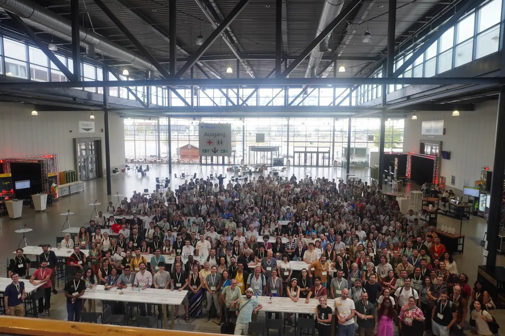
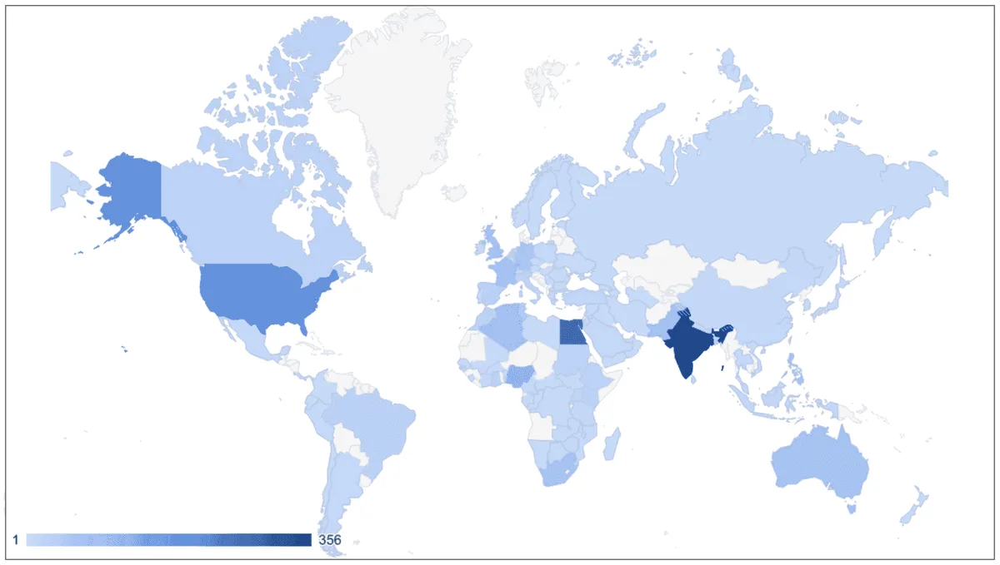
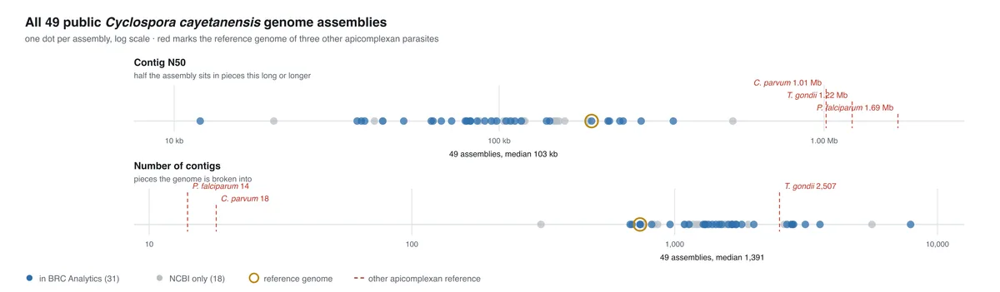

News
Latest updates from the Galaxy Project community
Showing news from all regions.Only want your region? Galaxy Freiburg news
Showing 20 of 1,733 articles





No articles in this sample
Latest updates from the Galaxy Project community
Showing news from all regions.Only want your region? Galaxy Freiburg news
Showing 20 of 1,733 articles



No articles in this sample